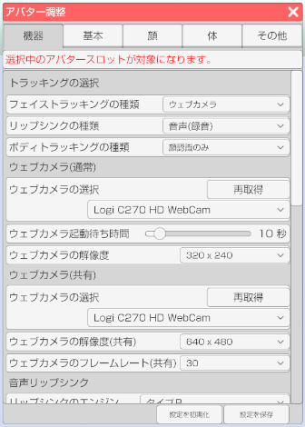

右側メニューのアバター調整のアイコンをクリックします。

機器タブを選択します。

アバターに対する調整や機器設定を行います。
右側メニューのアバター調整のアイコンをクリックします。
機器タブを選択します。

アバターを複数読み込んでいる場合にどのアバターを対象にするかを選択します。
フェイストラッキングの種類
使用するフェイストラッキングの種類を指定します。
3tene のエディション(FREE、PRO等)によって対応項目が異なります。
・ウェブカメラ → ウェブカメラの映像で顔認識を行います。
・iPhoneX → iPhoneX 以降に 3teneFT をインストールして使用します。
・動画ファイル → 動画ファイルで顔認識を行います。(STUDIO版のみ)
リップシンクの種類
使用するリップシンクの種類を指定します。
3tene のエディション(FREE、PRO等)によって対応項目が異なります。
・顔認識 → 「フェイストラッキングの種類」で指定された方法で口を動かします。
・音声認識 → マイク入力で音声認識を行い、口を動かします。
・音声ファイル → 音声ファイルで音声認識を行い、口を動かします。
ボディトラッキングの種類
アバターの操作方法を指定します。
3tene のエディション(FREE、PRO等)によって対応項目が異なります。
・顔認識のみ → フェイストラッキングの結果で体の傾き等が行なわれます。
・LeapMotion → LeapMotion を使用します。(FREE版のみ)
・3tene モーションアプリ → 接続した 3tene のモーションアプリを使用します。
ウェブカメラ
使用するウェブカメラを指定します。
認識しているウェブカメラがドロップダウンメニューに表示されます。
ウェブカメラ起動待ち時間
ウェブカメラ使用開始の初期化で何秒待つかを指定します。
フェイストラッキングの開始で失敗する場合は長めの時間を指定してください。
ウェブカメラの解像度
ウェブカメラの解像度を指定します。
320 x 240, 640 x 480, 800 x 600, 1024 x 768
の中から選択できるので好みの解像度を選択してください。
※指定した解像度にウェブカメラが対応していない場合は近い値で動作します。
開発中の機能なので後で記述します。
ウェブカメラ
使用するウェブカメラを指定します。
認識しているウェブカメラがドロップダウンメニューに表示されます。
ウェブカメラの解像度(共有)
ウェブカメラの解像度を指定します。
各機能で共有している場合は最初に開いて解像度で
全ての機能が動作します。
※指定した解像度にウェブカメラが対応していない場合は近い値で動作します。
ウェブカメラのフレームレート(共有)
ウェブカメラのフレームレートを指定します。
各機能で共有している場合は最初に開いてフレームレートで
全ての機能が動作します。
※指定したフレームレートにウェブカメラが対応していない場合は近い値で動作します。
リップシンクのエンジン
使用する録音機器を指定します。
認識している録音機器（マイク等）がドロップダウンメニューに表示されます。
・タイプＡ → 3tene V3 までのエンジンと同等です。
・タイプＢ → 3tene V4 で追加された新しいエンジンです。(M1 Mac でも使えます。)
リップシンクの音声入力
使用する録音機器を指定します。
認識している録音機器（マイク等）がドロップダウンメニューに表示されます。
リップシンク起動待ち時間
リップシンク使用開始の初期化で何秒待つかを指定します。
フェイストラッキングの開始で失敗する場合は長めの時間を指定してください。
IPアドレス
モーションアプリを使用している接続先の PC の IP アドレスを入力します。
接続するモーションアプリが同じ PC 内で起動されている場合は
デフォルトの「127.0.0.1」を設定してください。
フィルターの強さ
モーションアプリでトラッキングした動きの反応速度を調整します。
値を小さくするとアバターの動きが遅くなりますが、スムーズな動きになります。
値を大きくするとアバターの動きは早くなりますが、カクカクした動きになります。
また、 PC の処理速度によって違ってくるので使用している PC に合わせて調整してください。
Perception Neuron を使う為の設定をします。
立ち位置
使用する録音機器を指定します。
認識している録音機器（マイク等）がドロップダウンメニューに表示されます。
アクターID
Axis Neuron で複数の Perception Neuron が接続されている場合に指定します。
IPアドレス
Axis Neuron が起動されている PC の IPアドレスを指定します。
3tene と Axis Neuron が同じ PC 内で起動されている場合は
デフォルトの「127.0.0.1」を設定してください。
ポート
Axis Neuron が起動されている PC にアクセスするポートを指定します。
3tene と Axis Neuron が同じ PC 内で起動されている場合は
デフォルトの「7001」を設定してください。
全ての指を制御する
オフにすると指が全て動かなくなります。
指の調整や状態が良くならない場合はオフにしてください。Perception Neuron Pro は指には対応していませんが、オフにする事によって
アバター調整「体」タブの「手の形状」が使用可能になります。
※Perception Neuron V2 でもオフにすれば「手の形状」が使用可能です。
親指を制御する
オフにすると親指が動かなくなります。
VRM 規格と Perception Neuron の仕様が合わない為、
親指が変形する事があります。
親指の角度を調整しても変形が改善されない場合はオフにしてください。
親指の角度
VRM 規格と Perception Neuron の仕様が合わないのを調整します。
モデルデータによって異なりますが 45～60 くらいが目安です。
足首を制御する
オフにすると足首、つま先が動かなくなります。
足首の調整や状態が良くならない場合はオフにしてください。
移動を制限する
アバターの位置が固定されます。
アバターが画面外に出ると困る等、用途によって使用してください。
座標を処理する
有効にするとアバターのモデル表示が崩れるのでオフで使用してください。
Hi5 VR GROVE の操作方法の説明は下のリンク先のページに記述しましたので、そちらを確認してください。
Hi5 VR GROVEについて